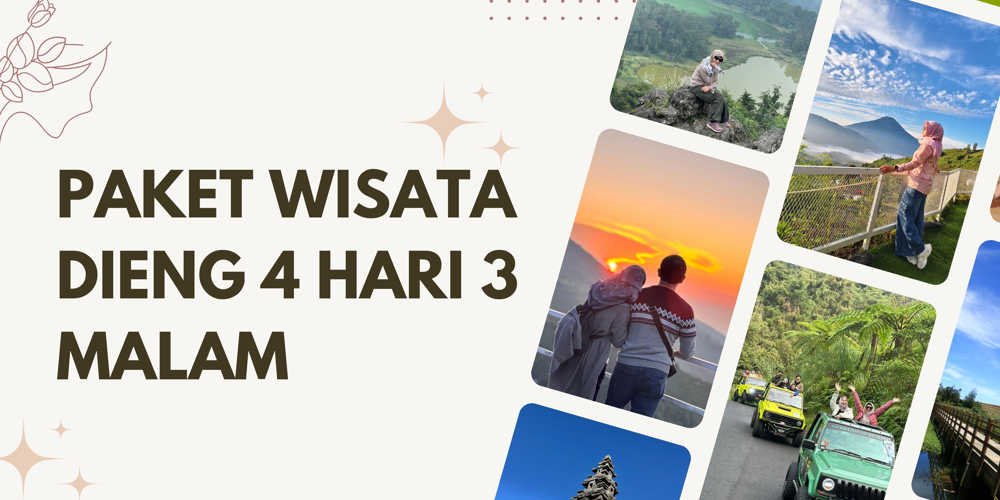

Paket Wisata Dieng 4 Hari 3 Malam – Experience Dieng with Style
Empat hari di Dieng, semua yang kamu cari: pemandangan terbaik, udara segar, wisata hits, dan waktu santai bareng travel partner. Nikmati itinerary modern — sunrise, culture, kuliner, healing, sampai sunset vibes — dengan fasilitas lengkap dan fleksibel di setiap harinya.
Program ini cocok buat siapa pun yang ingin liburan berkualitas tanpa terburu-buru. Seluruh destinasi utama Dieng plus spot pilihan hari terakhir bisa kamu tentukan sendiri. Semua urusan perjalanan, mulai dari kendaraan, makan, penginapan, hingga tiket wisata, sudah di-handle full oleh tim lokal profesional.
Fasilitas
- Kendaraan wisata: Armada & driver profesional selama trip
- Menginap 3 malam: Homestay/hotel strategis di kawasan Dieng, bisa pilih kamar sesuai kebutuhan
- Makan 10x: Mulai dari sarapan, makan siang, makan malam, sampai cemilan khas lokal
- Tiket destinasi: Semua tiket wisata sesuai itinerary — tanpa biaya tambahan
- Tour leader lokal: Pemandu asik, ramah, paham spot foto dan kuliner Dieng
- BBM, parkir, tol: Semua kebutuhan kendaraan sudah all-in
- Air mineral: Air minum untuk peserta setiap hari
Destinasi
- Bukit Sikunir: Sunrise view dengan suasana pagi khas pegunungan Dieng
- Telaga Cebong: Danau alami di kaki Sikunir, buat slow morning dan foto
- Kawah Sikidang: Kawah aktif, fenomena alam unik yang jadi icon Dieng
- Komplek Candi Arjuna: Kompleks candi Hindu kuno, landscape padang dan pegunungan
- Batu Ratapan Angin: Bukit hits dengan dua telaga di satu frame
- Dieng Plateau Theater: Bioskop mini untuk explore sejarah & budaya Dieng
- Taman Pintu Langit: Taman tematik & spot santai buat healing
- Pemandian Air Panas: Wajib coba relax di air hangat alami pegunungan
- Kahyangan Skyline: Gardu pandang dengan view landscape Dieng dari atas
- Dieng Park: Family park, playground dan wahana outdoor
- Air Terjun Sikarim: Air terjun alami, segar dan jauh dari keramaian
- Telaga Menjer: Danau besar, spot ngadem dan foto panorama
- Perkebunan Teh: Jalan santai di area kebun teh dengan vibe hijau tenang
- Sentra Oleh-oleh & Kuliner: Tempat belanja oleh-oleh, jajal makanan khas Dieng & Wonosobo
- Bukit Scooter: Sore hari atau menjelang sunset, spot populer buat chill & foto dengan view kota dan bukit
- Destinasi Hari Terakhir: Fleksibel, kamu bisa pilih sendiri atau ikut rekomendasi (alam, kota, heritage, dll)
Itinerary
Hari Pertama
| Aktivitas | Deskripsi |
|---|---|
| Penjemputan & Perjalanan ke Dieng | Start dari meeting point (Wonosobo, Semarang, Jogja, Purwokerto, Solo, bandara/stasiun/hotel), perjalanan santai ke Dieng, check-in penginapan, makan siang. |
| Kahyangan Skyline | Langsung dapat vibe Dieng dari gardu pandang — cityscape & landscape di satu view. |
| Dieng Plateau Theater | Mini cinema buat ngulik sejarah, budaya, dan visual alam Dieng. |
| Taman Pintu Langit | Healing tipis-tipis di taman tematik, banyak spot buat foto dan leyeh-leyeh. |
| Dieng Park | Playground keluarga, wahana outdoor, cocok buat yang trip bareng anak atau teman-teman. |
| Makan malam & istirahat | Acara santai, bisa kuliner malam atau ngumpul di penginapan. |
Hari Kedua
| Aktivitas | Deskripsi |
|---|---|
| Sunrise Bukit Sikunir | Berangkat subuh buat sunrise, view pegunungan + awan di bawah kaki. |
| Telaga Cebong | Morning chill, foto di pinggir danau, suasana fresh dan tenang. |
| Kawah Sikidang | Lihat langsung kawah vulkanik, uap panas dan fenomena alam unik. |
| Komplek Candi Arjuna | Keliling area candi Hindu klasik, landscape luas & spot foto heritage. |
| Batu Ratapan Angin | Spot best view, dua telaga dan pegunungan di satu frame foto. |
| Pemandian Air Panas | Relaksasi di air hangat alami sebelum kembali ke penginapan. |
| Makan malam & santai | Acara bebas malam, bisa eksplor sekitar atau chill di penginapan. |
Hari Ketiga
| Aktivitas | Deskripsi |
|---|---|
| Air Terjun Sikarim | Pagi menuju air terjun alami, suasana tenang, cocok buat recharge energi. |
| Telaga Menjer | Danau luas di lereng gunung, vibe adem, spot foto keren. |
| Perkebunan Teh | Jalan di antara kebun teh, nuansa hijau, bisa lihat aktivitas petani lokal. |
| Sentra Oleh-oleh & Kuliner | Belanja, kulineran, dan cari buah tangan khas Dieng & Wonosobo. |
| Bukit Scooter (sore - sunset) | Sore hari santai di Bukit Scooter, spot chill, city light & sunset view, pas buat foto-foto sebelum balik ke penginapan. |
| Makan malam & acara bebas | Acara santai malam, bisa rehat, ngobrol, atau jalan malam sekitar penginapan. |
Hari Keempat
| Aktivitas | Deskripsi |
|---|---|
| Destinasi Pilihan (Custom Request) | Pagi hari setelah sarapan, peserta bebas pilih destinasi tambahan sesuai mood: wisata alam, heritage, atau chill di spot favorit sebelum pulang. |
| Perjalanan pulang | Pengantaran ke meeting point awal atau lokasi yang sudah disepakati, trip selesai. |
Panduan Perjalanan
Empat hari di Dieng, cuaca mayoritas sejuk sampai dingin, terutama pagi & malam. Rekomendasi: jaket tebal, sepatu nyaman, dan gear pribadi. Semua rute ramah untuk keluarga maupun solo trip. Untuk request destinasi hari keempat, bisa langsung konsultasi sebelum berangkat.
Meeting Point (Mepo)
Penjemputan di Wonosobo, Semarang, Jogja, Purwokerto, Solo, bandara, stasiun, hotel, atau titik lain di Jawa Tengah & DIY yang paling nyaman buat peserta.
Pertanyaan yang Sering Ditanyakan
Hari terakhir bisa pilih destinasi sendiri?
Bisa, peserta bebas request destinasi tambahan — bisa wisata alam, kota, atau tempat unik lain sesuai keinginan.
Bisa dijemput dari luar kota?
Penjemputan fleksibel, bisa atur dari kota mana saja, termasuk bandara, stasiun, atau hotel di area Jawa Tengah & DIY.
Penginapan dan makanannya gimana?
Penginapan nyaman di area Dieng, makan 10x termasuk kuliner khas, sudah all-in paket.
Bisa tambah hari atau upgrade fasilitas?
Bisa banget, tinggal diskusi sama tim reservasi sebelum keberangkatan.
Lihat Gallery Foto dan Video →
Layanan sudah legal dan berpengalaman sejak 2012. Konsultasi gratis & tanpa komitmen. Siap bantu rencana family trip, gathering, maupun private group ke Dataran Tinggi Dieng.